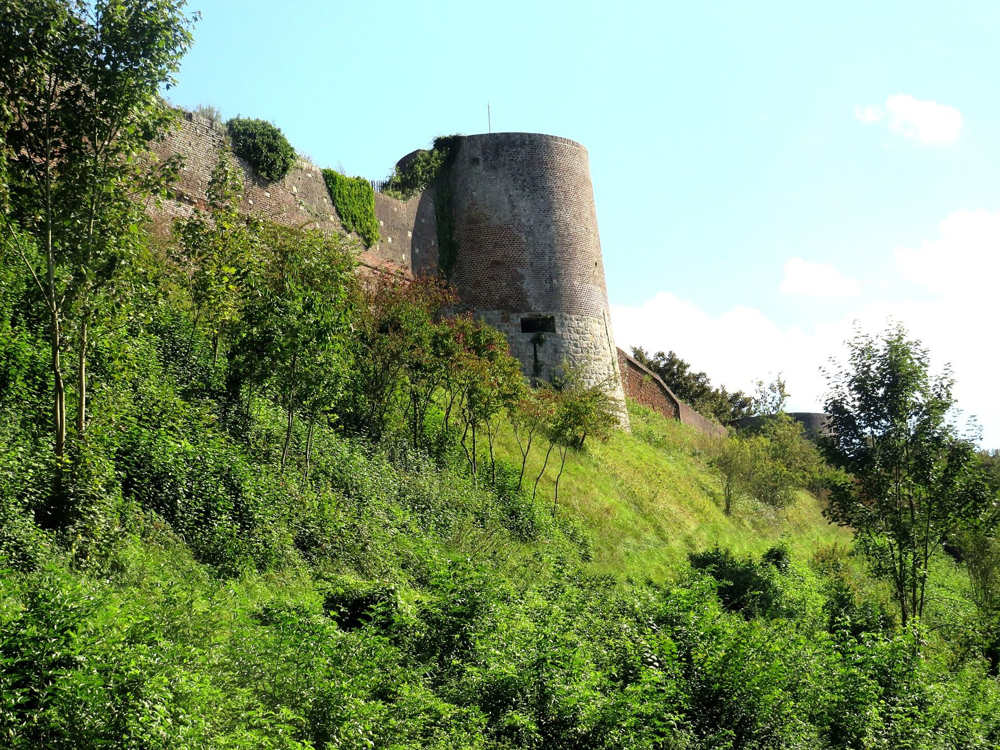
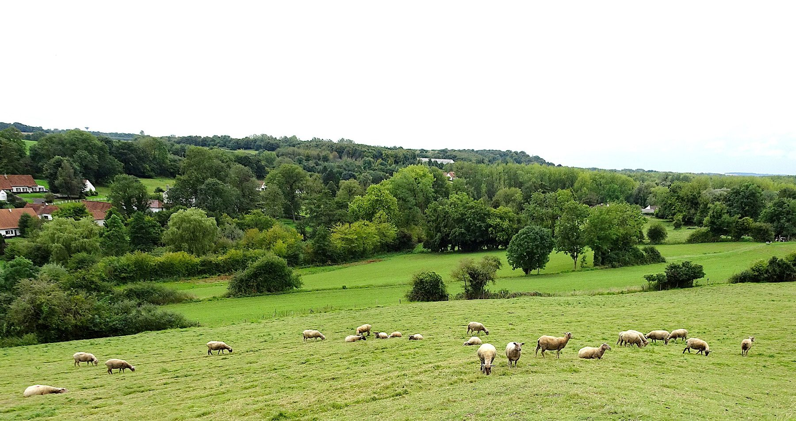

Kévin Caloin gère votre meublé de tourisme ou veille sur votre résidence secondaire, de Montreuil au Touquet. Un interlocuteur unique, un portefeuille volontairement limité.
Photos professionnelles incluses, tarification ajustée à la saison, voyageurs accueillis 7 j/7, ménage et linge coordonnés, reporting chaque mois. Vous ne louez pas un mois ? Vous ne payez rien.

Autour des remparts · Wikimedia CommonsGrandi entre les remparts de Montreuil et les plages de la Côte d'Opale. Formé à l'immobilier et à la gestion de patrimoine, cinq ans dans la vente de maisons individuelles, photographe professionnel : chaque étape de la gestion d'un meublé, il l'a déjà exercée.
« Vous ne confiez pas votre maison à une enseigne. Vous la confiez à une personne. »